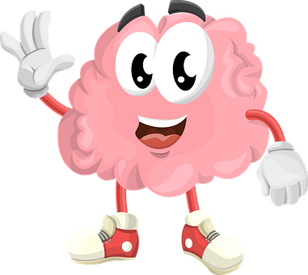
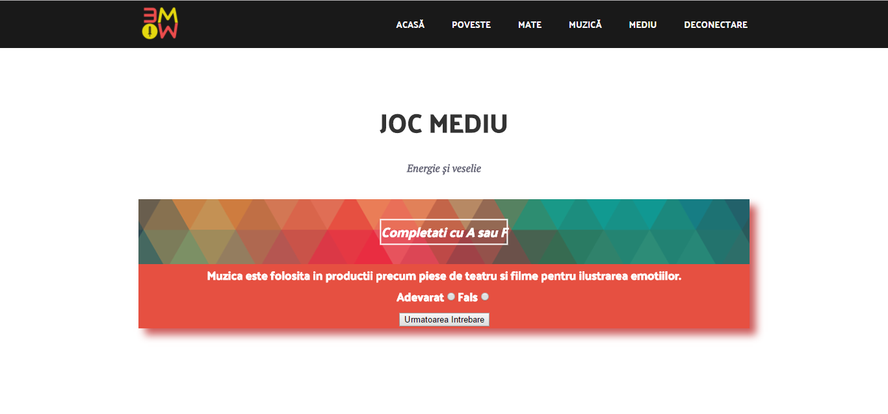

Pentru fiecare părinte, capitolul “educaţie copii” este primordial.
Noi suntem convinşi că, stârnindu-le copiilor curiozitatea, îi ajutăm
să-şi contureze un viitor măreţ şi o minte sănătoasă.

...de pe WWW Distractiv, captivant si educativ
Conceptul propune o alternativă pentru petrecerea timpului liber într-un
mediu foarte agreat de copii. Micuţii îşi vor dezvolta aptitudinile şi
cunoştinţele, fiind încurajaţi să viziteze site-uri
potrivite pentru vârsta şi nevoile lor.
Ce materii vor fi puse la încercare?
Despre domeniile testate
În lumea pe care le propunem copiilor să o descopere am reprezentat 3 materii importante în dezvoltarea culturii lor generale. Acestea sunt Matematica, Mediul înconjurător și Muzica.
Despre mediul imaginar creat pentru ei puteți afla mai multe consultând POVESTEA.
Materii
Ce tipuri de exerciții sunt propuse?
Despre nivelele de dificultate
Testele de la fiecare materie sunt organizate pe câte 3 nivele de dificultate, Usor, Mediu și Dificil.
Modalitatile de completare ale testelor diferă în funcție de dificultate. Astfel, testele ușoare vor fi reprezentate din întrebări cu variante de răspuns, cele medii de variante adevărate sau false, iar cele dificile de întrebări cu completarea unui câmp.
Dificultatea testelorTeste ușoare

Teste mediiTeste dificile
Ne place. Cum creăm un cont?
Părinți și copii pentru educație
Părinții au un rol important în educația copiilor și îi ghidează spre cele mai bune decizii. De aceea în site este necesară crearea unui cont de părinte care poate mai târziu crea conturi pentru toți copiii săi. Părintele poate vedea punctajele tuturor copiilor săi la fiecare dintre materii.
Creare cont - părinteCreare cont - copil
Rezultatele muschetarilor
Punctaje
Pentru fiecare materie sunt vizibile punctajele pe pagina copilului. Părintele poate vizualiza punctajele tuturor copiilor sai. Astfel părintele poate urmari ușor evoluția copilului, iar acesta poate vedea la ce materie s-a descurcat cel mai bine.
Punctaj in pagina copiluluiPunctaj in pagina parintelui